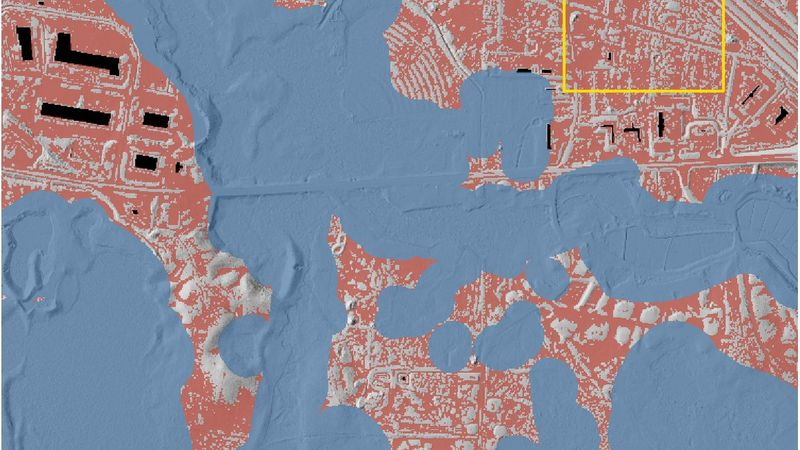
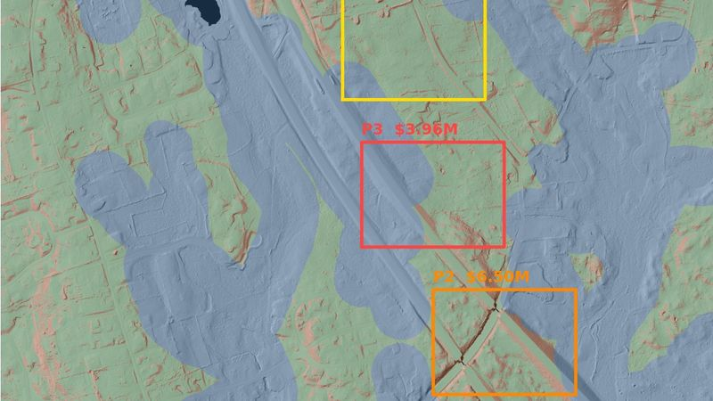
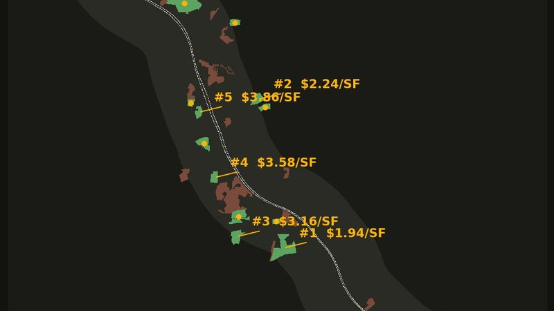

Shortlist from public data
Public lidar, parcel records, mapped wetlands, streams and slope are enough to say which properties deserve a closer look and which are already out.
On wooded land that gap decides the budget, because trees hide the hillside, the wet ground and the buildable pad underneath, and a surface built from photographs counts the canopy as dirt. These four Massachusetts studies measure the ground itself, using public data that anyone can download and re-run.
Both sides come from the same forest, the same flight and the same laser pulses. On the left is the treetop surface, which is roughly what a camera reconstructs when leaves hide the ground. On the right is the bare earth underneath it, rebuilt from the pulses that found gaps in the canopy.


This is Devens, Massachusetts, the parcel where Commonwealth Fusion Systems later built its campus. The ridge, the drainage and the flat ground only exist on one side of the line. See the full study →
Every one of them ran on free public data, and together they show the kind of decision this work supports. None of them is a bid, a survey, a wetland delineation or a final design.
 01
01Lidar caught this parcel just before construction started, so the modeled ground can be checked against the campus that actually got built.

02The dirt work here is manageable, but the water is not, because the terrain shows wetness that the mapped wetland layers alone would miss.

03There is one building and one parcel but three places to put it, and moving the same footprint a few hundred feet changes the earthwork bill enormously.

04Nine towns and every vacant parcel over ten acres within a mile of the highway, all run through the same screen.
Using one conceptual grading approach makes terrain risk comparable across sites. These subtotals cover modeled earthwork and midpoint clearing only, so they are not sitework budgets.
| Site | Conceptual pad | Earthwork @ $20/yd³ | Clearing midpoint | Access flag | Earthwork + clearing / pad SF |
|---|---|---|---|---|---|
| 01 Devens | 5.3 ac / 232,600 SF | $0.49M ± $57k | $16k | 21% bank requires redesign | $2.20 |
| 02 Middleborough | 16.3 ac / 710,000 SF | $1.69M ± $173k | $50k | screened route peaks at 5.1% | $2.50 |
| 03 Hopkinton | 16.3 ac / 710,000 SF | $6.34M ± $173k | $68k | 11% route requires redesign | $9.00 |
Hopkinton is highlighted because it is the outlier: the same conceptual building on similar acreage costs roughly four times as much to sit down, and terrain is the only reason.
Not included: final grading design, topsoil stripping, shrink/swell, unsuitable soils, rock excavation, haul and disposal, retaining walls, utilities, stormwater construction, erosion control, mobilization, permitting, survey, or engineering. The $20/yd³ rate is an illustrative screening assumption; a real project needs current contractor input.
A single assumed rate is worth little on its own, so the same three sites are run across the full $10 to $40 range. The absolute numbers move by a factor of four, which is the honest reading of a screening estimate. What does not move is the comparison.
| Site | Modeled volume | @ $10/yd³ | @ $20/yd³ | @ $40/yd³ |
|---|---|---|---|---|
| 01 Devens | 24,532 yd³ | $0.26M · $1.12/SF | $0.51M · $2.18/SF | $1.00M · $4.29/SF |
| 02 Middleborough | 84,437 yd³ | $0.89M · $1.26/SF | $1.74M · $2.45/SF | $3.43M · $4.83/SF |
| 03 Hopkinton | 316,993 yd³ | $3.24M · $4.56/SF | $6.41M · $9.03/SF | $12.75M · $17.95/SF |
Hopkinton costs 4.06 times what Devens costs per pad square foot at $10/yd³, 4.14 times at $20, and 4.19 times at $40. The unit rate decides how large the bill is, and the terrain decides which site is cheaper. That is why a screening estimate can support a siting decision while still being the wrong number to put in a budget.
Public data can rule out a weak parcel for almost nothing, so a fresh flight is only worth paying for once a site has survived that first cut.
Public lidar, parcel records, mapped wetlands, streams and slope are enough to say which properties deserve a closer look and which are already out.
Where the public elevation data is too old to trust, current lidar and imagery get collected under an FAA Part 107 flight plan with site access and ground control.
Pad locations, earthwork, access grades, drainage and clearing are compared side by side, along with the field, survey and engineering work the decision still needs.
Current status: Lidar Site Studies is a service concept and public-data demonstration by Max Howe. Fresh-flight work would be scoped with an FAA Part 107 remote pilot. Survey control, authoritative boundaries, civil design and stamped deliverables come from licensed partners when a project needs them. Read the full method, sources and limitations before relying on a number.